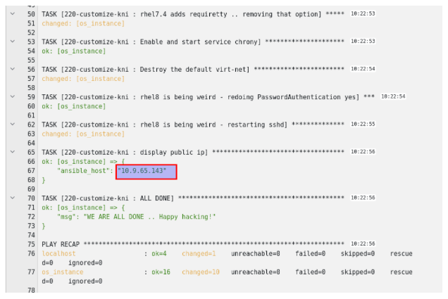
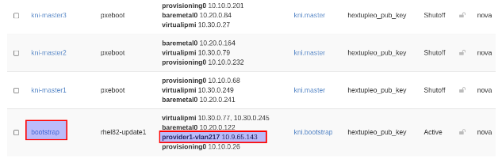
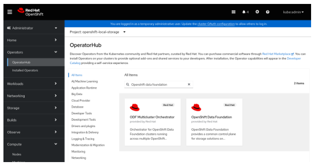
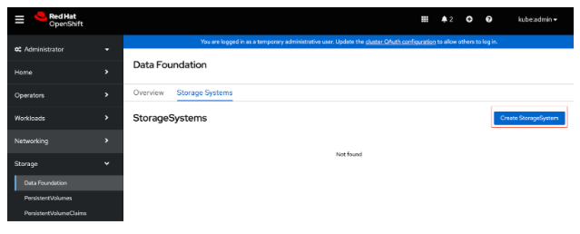
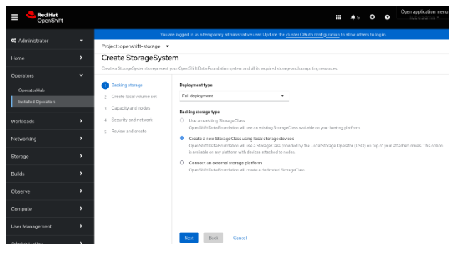
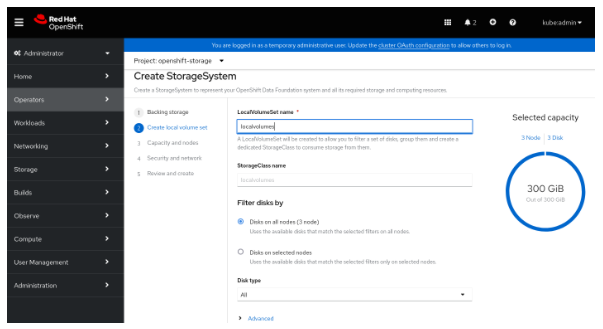
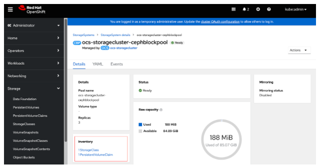
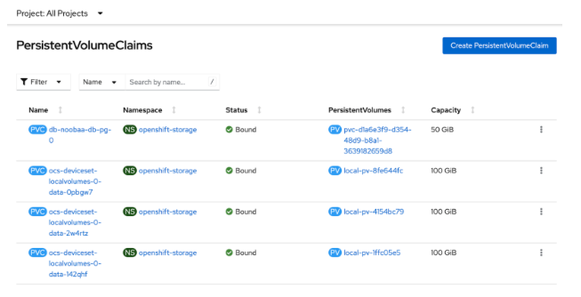
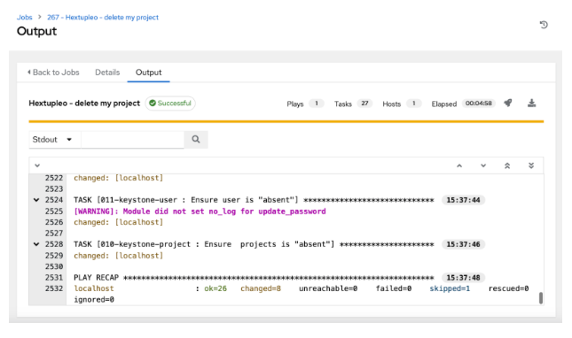

OCP Baremetal IPI Installation
Introduction
Goals:
- Enable field on OpenShift Baremetal 4.12
- Test basics features work (no regression)
- Test new selected set of features
- Optionally test tech preview features
- Report product and documentation bugs
- Send valuable feedback to Product management and engineering teams
- Convert the work accomplished into lab training guides in order to enable more folks in the field
- Have fun with OpenShift Baremetal
- Get to work with and get to know each other.
Lab Access
HextupleO
The lab access will be provided in the form of nested virtualization managed by RHOSP 17.
We have limited resources available, but there should be enough room for about 10 virtual environments.
Standard roles have been pre-defined, but since we are using OpenStack to manage it, we are capable of being flexible, with resizing flavors, snap-shotting, adding more cinder volumes to OCS nodes or even adding more networks via either OpenStack CLI, Horizon, or Ansible Tower.
| Role | vRAM | vCPU | vNIC | Disk |
|---|---|---|---|---|
| Bootstrap | 20G | 6 |
|
100GB |
| Master | 16GB | 4 |
|
25 GB |
| Worker | 24GB | 12 |
|
50GB 100GB OSD |
| Custom (optional) |
Building Your KNI Lab:
Default Configuration
-
To build your environment, please ensure you are connected to the NA-SSA VPN first.
-
Access RHAAP via link - NA-SSA Ansible Automation Platform.
-
Select Templates in the left pane; click the rocket icon in the Action column to the right of Deploy OpenShift Baremetal Environment
-
Update the Project Name and Password fields. The project name and password are used to access your environment via CLI and the Horizon GUI. Choose a password you will remember.

-
The jobs can be monitored under Jobs in the left pane. Additional jobs will be initiated to create the project, network, instances, and bare metal bootstrap. Wait the deployment to finish which can take ~10-15 minutes.
Customized Deployment
-
To build your environment, please ensure you are connected to Red Hat VPN.
-
Access RHAAP via link - NA-SSA Ansible Automation Platform.
-
Go to Templates tab and hit the “rocket” icon next to - Hextupleo - create project.
-
Update the Project Name and Password fields. The project name and password are used to access your environment via CLI and the Horizon GUI. Choose a password you will remember.
-
Go to Templates tab and hit the “rocket” icon next to - “Hextupleo - create networks”. In hexo4 you are encouraged to experiment with different settings. However if you’d like to start with the known network configuration the default templates should be fine.
-
Set user/project and password using the same project and password used previously when creating the project. Submit the job.
-
Go to Templates tab and hit the “rocket” icon next to - “Hextupleo - create instances”. Below is a good starting config with 3 controllers 2 computes and 3 ceph nodes.
With OCS (xlarge workers):
instances: - { name: "bootstrap", image: "rhel-8.2", flavor: "kni.bootstrap", ipmi: "False", extra_volume_size: "0", net_name1: "vlan1117", net_name2: "provisioning0", net_name3: "baremetal0", net_name4: "", net_name5: "", net_name6: "", net_name7: "", net_name8: "" } - { name: "kni-worker3", image: "pxeboot", flavor: "kni.worker.xlarge", ipmi: "True", extra_volume_size: "100", net_name1: "provisioning0", net_name2: "baremetal0", net_name3: "", net_name4: "", net_name5: "", net_name6: "", net_name7: "", net_name8: "" } - { name: "kni-worker2", image: "pxeboot", flavor: "kni.worker.xlarge", ipmi: "True", extra_volume_size: "100", net_name1: "provisioning0", net_name2: "baremetal0", net_name3: "", net_name4: "", net_name5: "", net_name6: "", net_name7: "", net_name8: "" } - { name: "kni-worker1", image: "pxeboot", flavor: "kni.worker.xlarge", ipmi: "True", extra_volume_size: "100", net_name1: "provisioning0", net_name2: "baremetal0", net_name3: "", net_name4: "", net_name5: "", net_name6: "", net_name7: "", net_name8: "" } - { name: "kni-master3", image: "pxeboot", flavor: "kni.master", ipmi: "True", extra_volume_size: "0", net_name1: "provisioning0", net_name2: "baremetal0", net_name3: "", net_name4: "", net_name5: "", net_name6: "", net_name7: "", net_name8: "" } - { name: "kni-master2", image: "pxeboot", flavor: "kni.master", ipmi: "True", extra_volume_size: "0", net_name1: "provisioning0", net_name2: "baremetal0", net_name3: "", net_name4: "", net_name5: "", net_name6: "", net_name7: "", net_name8: "" } - { name: "kni-master1", image: "pxeboot", flavor: "kni.master", ipmi: "True", extra_volume_size: "0", net_name1: "provisioning0", net_name2: "baremetal0", net_name3: "", net_name4: "", net_name5: "", net_name6: "", net_name7: "", net_name8: "" }Without ODF (normal workers):
instances: - { name: "bootstrap", image: "rhel-8.2", flavor: "kni.bootstrap", ipmi: "False", extra_volume_size: "0", net_name1: "vlan1117", net_name2: "provisioning0", net_name3: "baremetal0", net_name4: "", net_name5: "", net_name6: "", net_name7: "", net_name8: "" } - { name: "kni-worker3", image: "pxeboot", flavor: "kni.worker", ipmi: "True", extra_volume_size: "100", net_name1: "provisioning0", net_name2: "baremetal0", net_name3: "", net_name4: "", net_name5: "", net_name6: "", net_name7: "", net_name8: "" } - { name: "kni-worker2", image: "pxeboot", flavor: "kni.worker", ipmi: "True", extra_volume_size: "100", net_name1: "provisioning0", net_name2: "baremetal0", net_name3: "", net_name4: "", net_name5: "", net_name6: "", net_name7: "", net_name8: "" } - { name: "kni-worker1", image: "pxeboot", flavor: "kni.worker", ipmi: "True", extra_volume_size: "100", net_name1: "provisioning0", net_name2: "baremetal0", net_name3: "", net_name4: "", net_name5: "", net_name6: "", net_name7: "", net_name8: "" } - { name: "kni-master3", image: "pxeboot", flavor: "kni.master", ipmi: "True", extra_volume_size: "0", net_name1: "provisioning0", net_name2: "baremetal0", net_name3: "", net_name4: "", net_name5: "", net_name6: "", net_name7: "", net_name8: "" } - { name: "kni-master2", image: "pxeboot", flavor: "kni.master", ipmi: "True", extra_volume_size: "0", net_name1: "provisioning0", net_name2: "baremetal0", net_name3: "", net_name4: "", net_name5: "", net_name6: "", net_name7: "", net_name8: "" } - { name: "kni-master1", image: "pxeboot", flavor: "kni.master", ipmi: "True", extra_volume_size: "0", net_name1: "provisioning0", net_name2: "baremetal0", net_name3: "", net_name4: "", net_name5: "", net_name6: "", net_name7: "", net_name8: "" } -
Set user/project and password and submit the job using the same project and password used previously when creating the project. Submit the job.
-
Finally, go to Templates tab and hit the “rocket” icon next to - HextupleO - set up KNI
-
Follow the survey and submit the job
-
At the end you will be getting a screen similar to this one:

You can ssh to this IP as the user kni using the password you set in the playbook.
Accessing Your Project in Horizon
Horizon
-
Using the project name as the username and password that you specified when you launched your job, log into the Horizon Dashboard with this link:
-
Go to the Compute->Instances tab and make sure all of your requested nodes have been created.
-
Scroll down to the bottom of the list and note the Undercloud Public IP address. You will use that IP to access your undercloud node. This will match the above output from the Ansible job (even though it does not in this document). You can SSH to this IP as kni using the password you provided in the playbook.

-
Go to Network->Network Topology and get familiar with how the VMs are connected on the networks.
INFO: We have created Tenant (overlay) networks to satisfy all the non-routable networks.
-
Go to Routers, select the existing router (projectName_router); click the Interfaces tab and then click the Add Interface icon on the right. Add the baremetal0 interface in the Subnet dropdown. Click Submit.

Bootstrap
-
Access the bootstrap server via ssh using the IP address obtained in step 3 of the Accessing Your Project’s OpenStack Environment section and the password specified in Tower when deploying the KNI environment.
-
You can now start deploying Openshift Baremetal (KNI) based on the standard instructions below or feel free to deploy using any other documented process.
INFO: Repos
Even though you could register to your CDN and start using your own repos, there are local synced repos that are available over LAN. This should be much quicker to download from. Simply grap the rhel8.repo file from here:[kni@bootstrap ~]$ sudo curl http://172.20.129.10/hextupleo-repo/rhel8.repo -o /etc/yum.repos.d/rhel8.repo
Deploying Vanilla Openshift Baremetal
Even though you don’t have to follow this guide and just jump right into hacking, we highly encourage everyone to get at least one vanilla deployment done and get familiar with the process.
Steps below are going to be very similar if not mostly identical to Red Hat official documentation found here. Please also review the official documentation for accuracy and open any Bugzilla’s against it.
Bootstrap Configuration
-
Log into Bootstrap VM.
-
Update all packages on the system.
-
Install the KNI Packages.
-
Modify the user to add the libvirt group to the newly created kni user.
-
Start and enable libvirtd; verify the daemon started successfully.
[kni@bootstrap ~]$ sudo systemctl enable –now libvirtd [kni@bootstrap ~]$ systemctl status libvirtd ● libvirtd.service - Virtualization daemon Loaded: loaded (/usr/lib/systemd/system/libvirtd.service; enabled; vendor preset: enabled) Active: active (running) since Thu 2023-02-16 10:07:21 EST; 1s ago Docs: man:libvirtd(8) https://libvirt.org Main PID: 7506 (libvirtd) Tasks: 21 (limit: 32768) Memory: 18.1M CGroup: /system.slice/libvirtd.service ├─7407 /usr/sbin/dnsmasq --conf-file=/var/lib/libvirt/dnsmasq/default.conf --leasefile-ro --dhcp-script=/usr/libexec/libvirt_leaseshelper ├─7408 /usr/sbin/dnsmasq --conf-file=/var/lib/libvirt/dnsmasq/default.conf --leasefile-ro --dhcp-script=/usr/libexec/libvirt_leaseshelper └─7506 /usr/sbin/libvirtd --timeout 120 -
Create the default storage pool and start it.
-
Set up networking using the reconfig-net.sh script in the ~/GoodieBag directory. Once the connections are reconfigured, the script will display the final configuration. The output should look similar to what is displayed below. The script will also add the baremetal subnet to the external router if it was not completed in the Accessing Your Project’s OpenStack Environment section in the Horizon GUI.
[kni@bootstrap ~]$ cd GoodieBag [kni@bootstrap GoodieBag]$ ./reconfig-net.sh -h Script to reconfigure the eth1 and eth2 interfaces on bootstrap server in OpenStack for Openshift deployments. Usage: reconfig-net.sh [-a|--all|interfaceName] If -a or --all is passed, eth1 and eth2 will both be reconfigured as provisioning and baremetal bridge interfaces. If -r or --router is passed, interface reconfiguration is skipped and router configuration will complete. [kni@bootstrap ~]$ sudo /tmp/reconfig-net.sh -a Connection 'System eth1' successfully deactivated (D-Bus active path: /org/freedesktop/NetworkManager/ActiveConnection/2) Connection 'System eth2' (9c92fad9-6ecb-3e6c-eb4d-8a47c6f50c04) successfully deleted. Connection 'provisioning' (1b5a7497-4ff5-43ec-bb3e-df01e8f070e8) successfully added. Connection 'bridge-slave-eth1' (3a46f2d4-5a3e-4b8d-994b-0a055ade7a84) successfully added. Connection 'provisioning' successfully deactivated (D-Bus active path: /org/freedesktop/NetworkManager/ActiveConnection/5) Connection successfully activated (master waiting for slaves) (D-Bus active path: /org/freedesktop/NetworkManager/ActiveConnection/7) provisioning configured successfully. Connection 'System eth2' successfully deactivated (D-Bus active path: /org/freedesktop/NetworkManager/ActiveConnection/3) Connection 'System eth2' (3a73717e-65ab-93e8-b518-24f5af32dc0d) successfully deleted. Connection 'baremetal' (9ba0964b-3667-42f5-ae81-a0a0936985cf) successfully added. Connection 'bridge-slave-eth2' (f2b52c9b-087f-4b7c-9186-0ed593897c73) successfully added. Connection 'baremetal' successfully deactivated (D-Bus active path: /org/freedesktop/NetworkManager/ActiveConnection/9) Connection successfully activated (master waiting for slaves) (D-Bus active path: /org/freedesktop/NetworkManager/ActiveConnection/11) baremetal configured successfully. Current network interface configuration: NAME UUID TYPE DEVICE System eth0 5fb06bd0-0bb0-7ffb-45f1-d6edd65f3e03 ethernet eth0 baremetal 9ba0964b-3667-42f5-ae81-a0a0936985cf bridge baremetal provisioning 1b5a7497-4ff5-43ec-bb3e-df01e8f070e8 bridge provisioning virbr0 00fb2639-d510-4c0b-bdad-2a471e7c67c5 bridge virbr0 bridge-slave-eth1 3a46f2d4-5a3e-4b8d-994b-0a055ade7a84 ethernet eth1 bridge-slave-eth2 f2b52c9b-087f-4b7c-9186-0ed593897c73 ethernet eth2 Installing required packages to add the baremetal subnet to the external router. Verifying baremetal subnet has been added to external router. External router configuration correctly. [kni@bootstrap GoodieBag]$ -
Create a pull-secret.txt file. In a web browser, navigate to Install OpenShift on Bare Metal with user-provisioned infrastructure, in the Pull Secret section, click the Copy pull secret link.

-
Create a pull-secret.txt file in the kni user’s home directory by pasting the data just copied.
OpenShift Installation
The installation is based on the latest-4.12 version. This will need to be updated as new versions are released.
-
Retrieve the GA OpenShift Installer using the get-ocp-installer.sh script in the kni user’s ~/GoodieBag directory. This script will download the openshift-client installer, ensure the required packages are installed, create the install-config.yaml file, update the file with the appropriate IP addresses, ssh public keys, and pull-secret, and configure DHCP and DNS.
[kni@bootstrap ~]$ GoodieBag/get-ocp-installer.sh -h /tmp/get-ocp-installer.sh usage: -v Specify version, default is "latest-4.12". -s Specify full path of pull-secret.txt file, default is "~/pull-secret.txt". -d Specify directory to extract the release image in, default is current directory. -h Display help/usage information. [kni@bootstrap ~]$ GoodieBag/get-ocp-installer.sh Downloading the openshift-client-linux.tar.gz file. Extracting the openshift-client installer. The openshift-baremetal-installer installed successfully. Making sure required packages are installed. Last metadata expiration check: 0:21:44 ago on Mon 13 Feb 2023 03:02:05 PM EST. Package ansible-2.9.27-1.el8ae.noarch is already installed. Package python3-shade-1.32.0-2.20220110211405.47fe056.el8ost.noarch is already installed. Package python3-openstackclient-4.0.2-2.20220427020029.el8ost.noarch is already installed. Dependencies resolved. Nothing to do. Complete! done. Generating the install-config.yaml file. [WARNING]: provided hosts list is empty, only localhost is available. Note that the implicit localhost does not match 'all' PLAY [Generate configs] ************************************************************************************** TASK [Gathering Facts] ************************************************************************************** ok: [localhost] TASK [Learn kni instances in the project] ************************************************************************************** ok: [localhost] TASK [Show kni instances] ************************************************************************************** ok: [localhost] => { "msg": [ { "OS-DCF:diskConfig": "MANUAL", "OS-EXT-AZ:availability_zone": "leaf1", "OS-EXT-SRV-ATTR:host": null, "OS-EXT-SRV-ATTR:hostname": null, "OS-EXT-SRV-ATTR:hypervisor_hostname": null, … PLAY RECAP ********************************************************************************************** Localhost : ok=6 changed=1 unreachable=0 failed=0 skipped=0 rescued=0 ignored=0 done. Updating the install-config yaml file. Configuring DHCP and DNS. Is this your first attempt to install OpenShift [y|n]: y [kni@bootstrap ~]$ -
Review the contents of the ~/GoodieBag/install-configs.yaml file. All IP addresses for the server instances should be updated from the default of X.X.X.X, and the pullSecrets and sshKey variables should be updated with the correct information.
-
To ensure the installation doesn’t get interrupted if there is a disconnect in your ssh session, run the installation in a tmux window. The tmux utility was installed by the get-ocp-installer.sh script.
-
Deploy OpenShift using the openshift-baremetal-install command.
-
You can monitor your deployment in another window.
[kni@bootstrap ~]$ sudo virsh list Id Name State ------------------------------------------- 1 kni-test2-ntpgv-bootstrap running [kni@bootstrap ~]$ sudo virsh console <bootstrap-vm> [kni@bootstrap ~]$ source GoodieBag/<project_name>rc (kni-test2) [kni@bootstrap ~]$ openstack server list --insecure +--------------------------------------+------------------+---------+---------- | ID | Name | Status | Networks | Image | Flavor | +--------------------------------------+------------------+---------+---------- | d339db1a-4e50-4c69-8063-d7d92bfcc190 | ipmi_kni-master1 | ACTIVE | virtualipmi=10.30.0.132 | virtualipmi | | | ccfaf78c-80f5-4b01-b3ee-ab0fd82a07c0 | ipmi_kni-master2 | ACTIVE | virtualipmi=10.30.0.85 | virtualipmi | | | 14a636dd-3709-48e9-a6e2-be689d434ac7 | ipmi_kni-master3 | ACTIVE | virtualipmi=10.30.0.49 | virtualipmi | | | 77fda0c4-8a88-4970-806e-540e3946dd3a | ipmi_kni-worker1 | ACTIVE | virtualipmi=10.30.0.45 | virtualipmi | | | 80c13e57-2869-4473-99e2-c4748daaf84c | ipmi_kni-worker2 | ACTIVE | virtualipmi=10.30.0.147 | virtualipmi | | | 32f1de18-8bdb-4bdf-bdc3-57ddb0e522d8 | ipmi_kni-worker3 | ACTIVE | virtualipmi=10.30.0.210 | virtualipmi | | | 85369613-44ec-47fa-9a9b-2476ca9278e8 | kni-master1 | ACTIVE | baremetal0=10.20.0.8; provisioning0=10.10.0.200 | pxeboot | | | 438088a3-0182-4f9f-bcce-485bce5973d3 | kni-master2 | ACTIVE | baremetal0=10.20.0.119; provisioning0=10.10.0.160 | pxeboot | | | 0239711f-e661-47f3-bc71-eea60eec8763 | kni-master3 | ACTIVE | baremetal0=10.20.0.100; provisioning0=10.10.0.209 | pxeboot | | | 26798b59-1d6c-4d93-b51a-26b59c725a33 | kni-worker1 | SHUTOFF | baremetal0=10.20.0.77; provisioning0=10.10.0.91 | pxeboot | | | 3f11240b-5806-40f9-92d4-82a58df4053b | kni-worker2 | SHUTOFF | baremetal0=10.20.0.236; provisioning0=10.10.0.94 | pxeboot | | | 75015e47-7210-4bb8-8f45-8da5f3f78829 | kni-worker3 | SHUTOFF | baremetal0=10.20.0.124; provisioning0=10.10.0.109 | pxeboot | || 27c33f7a-ea95-4cd6-aec9-691fbcfe27c1 | bootstrap | ACTIVE | baremetal0=10.20.0.122; vlan1117=10.9.65.140; provisioning0=10.10.0.45 | rhel82-update1 | | +--------------------------------------+------------------+---------+----------Other commands that will come in handy in the later state of the deployment:
[kni@bootstrap ~]$ export KUBECONFIG=/home/kni/clusterconfigs/auth/kubeconfig [kni@bootstrap ~]$ oc get clusteroperators [kni@bootstrap ~]$ oc get nodesWe hope it works! If it has, then at the end of the deployment you will see something like this:
INFO Install complete! INFO To access the cluster as the system:admin user when using 'oc', run 'export KUBECONFIG=/home/kni/clusterconfigs/auth/kubeconfig' INFO Access the OpenShift web-console here: https://console-openshift-console.apps.kni-test2.hexo.lab INFO Login to the console with user: "kubeadmin", and password: "mv22Z-Tv2Zb-pTFgq-xAvki" DEBUG Time elapsed per stage: DEBUG Infrastructure: 29m15s DEBUG Bootstrap Complete: 9m54s DEBUG Bootstrap Destroy: 13s DEBUG Cluster Operators: 34m31s INFO Time elapsed: 1h13m54s
Accessing Your Environment
There should be a few ways to access your environment including using sshuttle or a jumphost.
Using sshuttle
The OpenShift Console is not available on the VPN network the lab environment is deployed on but rather the private network of your project. To access the console, you can use the sshuttle utility which allows you to create a VPN connection using an ssh connection to the bootstrap server. You need root access on the client machine but not on the bootstrap server. The sshuttle utility requirements are python 2.3 or higher which are already installed on the bootstrap server.
Linux Client Installation
-
Install using the dnf command from the EPEL repository.
-
There isn’t any configuration required to use sshuttle. You can create the VPN connection using the sshuttle command. Connect to your project’s bootstrap server’s IP address.
-
Access your OpenShift Console in your browser using the link:
https://console-openshift-console.apps.projectName.hexo.lab
NOTE: The user name is kubeadmin. The password can be found on the bootstrap server in the kni users’ ~/clusterconfig/auth directory in the the kubeadmin-password file.
MacOS Client Installation
-
If not installed already, install homebrew. Open a terminal window and grab the install.sh script from GitHub and run it. Wait for the command to finish. If you are prompted to enter a password, enter your Mac user’s login password and press ENTER.
-
Make the brew command available inside the terminal window.
-
Install sshuttle.
-
There isn’t any configuration required. You can create the VPN connection using the sshuttle command. Connect to your project’s bootstrap server’s IP address.
~ % sshuttle -r kni@172.20.XX.XX 10.20.0.0/24 [ -vv ] [local sudo] Password: kni@172.20.17.124's password: c : Connected to server.NOTE: As traffic is generated on the VPN connection, warning messages will be displayed in the terminal.
Example:
s: warning: closed channel 7 got cmd=TCP_DATA len=517 c : warning: closed channel 11 got cmd=TCP_STOP_SENDING len=0 s: warning: closed channel 11 got cmd=TCP_DATA len=517 s: warning: closed channel 11 got cmd=TCP_EOF len=0
-
Access your OpenShift Console in your browser using the link:
https://console-openshift-console.apps.projectName.hexo.lab
NOTE: The user name is kubeadmin. The password can be found on the bootstrap server in the kni users’ ~/clusterconfig/auth directory in the the kubeadmin-password file.
Using a JumpHost from OpenStack
-
Access your OpenStack environment, select Compute->Instances. Click the Launch Instance icon on the right. Enter the Instance Name, Description, AZ, and Count. Click Next.
NOTE: At this time, the procedures below will yield issues with accessing the jumphost due to a known issue with injecting the ssh keys. Please use the procedures under Using sshuttle above.
-
On the Source screen, make sure Select Boot Source is Image and Create New Volume is No. In the Available list of images, find fedora-cloud37 and click the up arrow to the right of the entry to move it up to the Allocated section. Scroll to the bottom, click Next.
-
On the Flavor screen, find t2.medium in the list of Available flavors, click the up arrow to the right of the entry to move it to Allocated. Scroll to the bottom, click Next.
-
On the Networks screen, add the vlan1117 and baremetal0 entries in the Available list to the Allocated list. Scroll to the bottom, click Next.
-
Click Next in the lower right on the Network Ports screen. On the Security Groups screen, click the down arrow next to the default security group in the Allocated section to move it to the Available section. Scroll to the bottom, click Next.
-
On the Key Pair screen, import your ssh keys using the Import Key Pair icon. Remove the hextupleo_pub_key key from Allocated by clicking the down arrow to the far right. Once complete, click the Launch Instance in the lower right as the remaining sections are not required or needing to be updated.
-
Ssh to environment and enable x11 and maybe firefox/chrome if you’d like.
``` [fedora@fedora-jumpbox ~]$ sudo dnf -y groupinstall gnome [fedora@fedora-jumpbox ~]$ sudo dnf -y group install "Basic Desktop" GNOME [fedora@fedora-jumpbox ~]$ sudo systemctl set-default graphical.target Removed /etc/systemd/system/default.target. Created symlink /etc/systemd/system/default.target → /usr/lib/systemd/system/graphical.target. [fedora@fedora-jumpbox ~]$ sudo -i [root@fedora-jumpbox ~]# passwd fedora Changing password for user fedora. New password: BAD PASSWORD: The password fails the dictionary check - it is based on a dictionary word Retype new password: passwd: all authentication tokens updated successfully. [root@fedora-jumpbox ~]# reboot
-
Adding DNS is optional and not a requirement.
Deploying ODF (storage)
Official docs -> https://access.redhat.com/documentation/en-us/red_hat_openshift_data_foundation/4.12/html/deploying_openshift_data_foundation_using_bare_metal_infrastructure/index
-
Install local storage operator; click Operators->OperatorHub. Search for local. Select the Local Storage Operator, in the pop up window, click the Install icon.

-
Keep the defaults; scroll to the bottom of the screen and click the Install icon.

-
Install ODF Operator; click Operators->OperatorHub, search for Data Foundation. Select the OpenShift Data Foundation Operator, in the pop-up window keep the defaults, scroll to the bottom and click Install.

-
Once the operator has successfully been installed, the GUI will indicate that a change has occurred and to refresh. Create the StorageSystem; select Storage->Data Foundation. Click the Storage System tab; click the Create StorageSystem icon on the right.

-
For the Backing storage type, select Create a new StorageClass using local storage devices. Click Next.

-
The worker nodes have been preconfigured with 100GB secondary drives.
[kni@bootstrap ~]$ ssh core@kni-worker1 Red Hat Enterprise Linux CoreOS 412.86.202301191053-0 Part of OpenShift 4.12, RHCOS is a Kubernetes native operating system managed by the Machine Config Operator (`clusteroperator/machine-config`). WARNING: Direct SSH access to machines is not recommended; instead, make configuration changes via `machineconfig` objects: https://docs.openshift.com/container-platform/4.12/architecture/architecture-rhcos.html [core@kni-worker1 ~]$ sudo fdisk -l | grep vdb Disk /dev/vdb: 100 GiB, 107374182400 bytes, 209715200 sectors -
On the Create local volume set screen, enter a name for the volume set. In the example below, localvolumes is used. Verify the Disks on all nodes (3 node) is selected in the Filter disks by section and All is selected for the Disk type. Click the Next icon.

-
A pop up confirmation window will display providing additional information to consider if this is a stretched cluster. Click the Yes icon if the settings are correct to create the LocalVolumeSet.
-
On the Capacity and nodes screen, accept the defaults and click Next.

-
On the Security and network screen, accept the default of SDN. Click Next.
-
On the Review and create screen, review the configuration and click Next if correct to create the Storage System.
-
It will take several minutes to create the local volumes and configure the storage. You can monitor the progress on the Storage->Data Foundation->StorageSystems screen. Click the ocs-storage-cluster-storagesystem link to access the Overview dashboard. As the system configures the storages, messages will be logged in the Activity section. Once complete, the Status for Storage Cluster and Data Resiliency should be green.

-
To verify local storage has been create, click the BlockPools menu item along the top; click the ocs-storagecluster-cephblockpool link. In the Inventory widget, click the links to view the available Storage Classes or the Persistent Volume Claims.

Storage Class:

PersistentVolumeClaims:
-
The local storage and volume claims can be viewed with the CLI.
[kni@bootstrap ~]$ oc get all -n openshift-local-storage NAME READY STATUS RESTARTS AGE pod/diskmaker-discovery-2xnxv 2/2 Running 0 3m46s pod/diskmaker-discovery-9vjbf 2/2 Running 0 3m49s pod/diskmaker-discovery-ff2cc 2/2 Running 0 4m2s pod/diskmaker-manager-c54j8 2/2 Running 0 2m10s pod/diskmaker-manager-prgbh 2/2 Running 0 2m10s pod/diskmaker-manager-xtw58 2/2 Running 0 2m10s pod/local-storage-operator-9bc77c9cf-rzqjt 1/1 Running 0 32m NAME TYPE CLUSTER-IP EXTERNAL-IP PORT(S) AGE service/local-storage-discovery-metrics ClusterIP 172.30.23.42 <none> 8383/TCP 11m service/local-storage-diskmaker-metrics ClusterIP 172.30.248.10 <none> 8383/TCP 2m10s NAME DESIRED CURRENT READY UP-TO-DATE AVAILABLE NODE SELECTOR AGE daemonset.apps/diskmaker-discovery 3 3 3 3 3 <none> 11m daemonset.apps/diskmaker-manager 3 3 3 3 3 <none> 2m10s NAME READY UP-TO-DATE AVAILABLE AGE deployment.apps/local-storage-operator 1/1 1 1 32m NAME DESIRED CURRENT READY AGE replicaset.apps/local-storage-operator-9bc77c9cf 1 1 1 32m [kni@bootstrap ~]$ oc get pv NAME CAPACITY ACCESS MODES RECLAIM POLICY STATUS CLAIM STORAGECLASS REASON AGE local-pv-2cc6fb0 100Gi RWO Delete Available localvolumes 113s local-pv-3faa9a90 100Gi RWO Delete Available localvolumes 113s local-pv-e2c0ad97 100Gi RWO Delete Available localvolumes 114s 3m45s
Deploying OCPv
Deleting Your Project
-
To remove your entire project, use the Template in Ansible Automation Platform.
-
Select Templates in the left pane; click the rocket icon in the Action column to the right of Hextupleo - delete my project.

-
Update the project_name: and project_password: fields. Click the Next icon in the lower left.
-
Review the information on the Preview screen. When ready to move forward, click the Launch icon in the lower left corner. The Jobs Output screen for the new job will display ongoing output as the system progresses through the Ansible playbook. You can monitor to completion or just check back to ensure your Job finishes successfully.

-
Verify your job finished successfully in the Jobs listing.

Troubleshooting
Getting NTP applied for workers and masters.
[kni@bootstrap ~]$ wget
[kni@bootstrap ~]$ wget
[kni@bootstrap ~]$ export KUBECONFIG=/home/kni/clusterconfigs/auth/kubeconfig
[kni@bootstrap ~]$ oc apply -f 99_workers-chrony-configuration.yaml
[kni@bootstrap ~]$ oc apply -f 99_masters-chrony-configuration.yaml
Check status of IPMI.
Appendix
The get-ocp-installer.sh script is provided as a quick method to complete the prep work before installing OpenShift. If you want to execute manually, the commands are provided below for your reference.
Set the environment variables and download the openshift-client-linux.tar.gz file.
[kni@bootstrap ~]$ export VERSION=latest-4.12
[kni@bootstrap ~]$ export RELEASE_IMAGE=$(curl -s https://mirror.openshift.com/pub/openshift-v4/clients/ocp/$VERSION/release.txt | grep 'Pull From: quay.io' | awk -F ' ' '{print $3}')
[kni@bootstrap ~]$ export cmd=openshift-baremetal-install
[kni@bootstrap ~]$ export pullsecret_file=~/pull-secret.txt
[kni@bootstrap ~]$ export extract_dir=$(pwd)
[kni@bootstrap ~]$ curl -s https://mirror.openshift.com/pub/openshift-v4/clients/ocp/$VERSION/openshift-client-linux.tar.gz | tar zxvf - oc
oc
[kni@bootstrap ~]$ sudo cp oc /usr/local/bin
[kni@bootstrap ~]$ oc adm release extract --registry-config "${pullsecret_file}" --command=$cmd --to "${extract_dir}" ${RELEASE_IMAGE}
[kni@bootstrap ~]$ sudo cp openshift-baremetal-install /usr/local/bin
Verify the installer file has been downloaded.
Create or generate install-config.yaml.
For your convenience, there is an ansible playbook inside a Goodiebag directory that helps gather mac information for the OCP nodes. It uses openstack APIs to gather the information. Install the required packages first Note: This step would typically not be performed on different hardware.
Generate the install-config.yaml
The file will look similar to this:
[kni@bootstrap ~]$ cat GoodieBag/install-config.yaml
apiVersion: v1
basedomain: hexo4.lab
metadata:
name: "kni-test"
networking:
machineCIDR: 10.20.0.0/24
networkType: OVNKubernetes
compute:
- name: worker
replicas: 3
controlPlane:
name: master
replicas: 3
platform:
baremetal: {}
platform:
baremetal:
apiVIP: <api-ip>
ingressVIP: <wildcard-ip>
provisioningNetworkCIDR: <CIDR>
hosts:
- name: "kni_worker3"
bootMACAddress: "fa:16:3e:0f:21:4d"
role: worker
hardwareProfile: unknown
bmc:
address: "ipmi://X.X.X.X"
username: "kni-test"
password: "changeme"
- name: "kni_worker2"
bootMACAddress: "fa:16:3e:5c:94:dd"
role: worker
hardwareProfile: unknown
bmc:
address: "ipmi://X.X.X.X"
username: "kni-test"
password: "changeme"
- name: "kni_worker1"
bootMACAddress: "fa:16:3e:86:ce:e8"
role: worker
hardwareProfile: unknown
bmc:
address: "ipmi://X.X.X.X"
username: "kni-test"
password: "changeme"
- name: "kni-master3"
bootMACAddress: "fa:16:3e:2e:7a:86"
role: master
hardwareProfile: default
bmc:
address: "ipmi://X.X.X.X"
username: "kni-test"
password: "changeme"
- name: "kni-master2"
bootMACAddress: "fa:16:3e:23:03:f5"
role: master
hardwareProfile: default
bmc:
address: "ipmi://X.X.X.X"
username: "kni-test"
password: "changeme"
- name: "kni-master1"
bootMACAddress: "fa:16:3e:43:75:71"
role: master
hardwareProfile: default
bmc:
address: "ipmi://X.X.X.X"
username: "kni-test"
password: "changeme"
pullSecret: '<pull_secret>'
sshKey: '<ssh_pub_key>'
You must update the ipmi IP addresses for each of the server instances, the pullSecret, and sshKey variables. Get the ipmi addresses using the openstack server command. First, you need to source the variables in the ~/GoodieBag/
[kni@bootstrap ~]$ source GoodieBag/<project_name>rc < - replace with your projectname
(kni-test) [kni@bootstrap ~]$ openstack server list --insecure | awk '/ipmi_/ { print $4 " " $8 }'
ipmi_kni_worker3 virtualipmi=10.30.0.106
ipmi_kni_worker2 virtualipmi=10.30.0.122
ipmi_kni_worker1 virtualipmi=10.30.0.139
ipmi_kni-master3 virtualipmi=10.30.0.37
ipmi_kni-master2 virtualipmi=10.30.0.150
ipmi_kni-master1 virtualipmi=10.30.0.132
Update each server’s host section replacing the X.X.X.X with the correct IP address.
hosts:
- name: "kni_worker3"
bootMACAddress: "fa:16:3e:0f:21:4d"
role: worker
hardwareProfile: unknown
bmc:
address: "ipmi://X.X.X.X" ← replace with 10.30.0.106
username: "kni-test"
password: "changeme"
Update the pullSecret variable at the bottom of the file with the pull-secret.txt file contents you created in the Openshift Installation.
(kni-test) [kni@bootstrap ~]$ cat pull-secret.txt
{"auths":{"cloud.openshift.com":{"auth":.....
pullSecret:'{"auths":{"cloud.openshift.com":{"auth":"b3BlbnNoaWHVXQkdaVy1jTVhZ0LXJlbGVhc2UtZGV2K29jbV9hY2Nlc3NMkRRN1RTWQxN2ExYjhmOTU6TQxN2Q2NzViOTESDA3UEFGOFNA4QzJTQVOTDNDUFU5SlJY8UV0pSWl
…
nZnVzNfN3NDA1NWIyMWU4Zjckx2ZGJHVVzFJd1FNLXRmeUxFcFVRZnVuRTJWdkNpo3MEw3MlJGl2czNkRzLUdpeBZ2xOQTFScw==","email":"user@redhat.com"}}}'
Update the sshKey variable with your ssh public key. If you have not generated it, use the ssh-keygen command.
[kni@bootstrap ~]$ ssh-keygen
Generating public/private rsa key pair.
Enter file in which to save the key (/home/kni/.ssh/id_rsa): <enter>
Enter passphrase (empty for no passphrase): <enter>
Enter same passphrase again:
Your identification has been saved in /home/kni/.ssh/crapid_rsa.
Your public key has been saved in /home/kni/.ssh/crapid_rsa.pub.
The key fingerprint is:
SHA256:CVnMl7uiOYLFK1jNkWQZ7M29cbsNhdP13Hfvbsy5Yfg kni@bootstrap
The key's randomart image is:
+---[RSA 3072]----+
| ..o o. . |
| = oo o . |
| + +o. . + . o.|
| + o.o.= o *|
| + . S+ = +|
| . = o + . .|
| o o . o . + . *.|
|. o o + . . o.*|
| . . . Eo|
+----[SHA256]-----+
[kni@bootstrap ~]$ cat .ssh/id_rsa.pub
ssh-rsa AAAAB3NzaC1yc2EAAAADAQABAAkkfCV0+7GCSABgQC1VX0CnifVays6EnaWHfeP5Qg30FOcr6m3PtY3V32PbEbXpuVaaPV
…
fionHKM8gdFbXo8yWqCTdT3HuMs9gjjjffMI/PAXZG0WXgEBsQlNoGrExgk/5116aZx7ioqqU= kni@bootstrap
Copy the id_rsa.pub contents and paste as the sshKey.
sshKey: 'ssh-rsa AAAAB3NzaC1yc2EAAAADAQABAAkkfCV0+7GCSABgQC1VX0CnifVays6EnaWHfeP5Qg30FOcr6m3Pt
…
fjffMI/PAXZG0WXgEBsQlNoGrExgk/5116aZx7ioqqU= kni@bootstrap'
Openshift Baremetal IPI also requires DHCP and DNS to be configured. Copy the respective files from the GoodieBag directory to /etc. Enable and start the dnsmasq daemon.
[kni@bootstrap ~]$ sudo cp GoodieBag/hosts /etc/
[kni@bootstrap ~]$ sudo cp GoodieBag/kni.dns /etc/dnsmasq.d/
[kni@bootstrap ~]$ sudo cp GoodieBag/resolv.conf.upstream /etc/
[kni@bootstrap ~]$ sudo cp GoodieBag/resolv.conf /etc/
[kni@bootstrap ~]$ sudo systemctl enable dnsmasq
Created symlink /etc/systemd/system/multi-user.target.wants/dnsmasq.service → /usr/lib/systemd/system/dnsmasq.service.
[kni@bootstrap ~]$ sudo systemctl start dnsmasq
If this is not your first attempt at installing OpenShift, cleanup the remnants of the first attempt.
[kni@bootstrap ~]$ for i in $(sudo virsh list | tail -n +3 | grep bootstrap | awk {'print $2'})
do
sudo virsh destroy $i;
sudo virsh undefine $i;
sudo virsh vol-delete $i --pool default;
sudo virsh vol-delete $i.ign --pool default;
done
[kni@bootstrap ~]$ rm -rf ~/clusterconfigs/auth ~/clusterconfigs/terraform* ~/clusterconfigs/tls ~/clusterconfigs/metadata.json
Create the clusterconfigs working directory in the kni home directory.